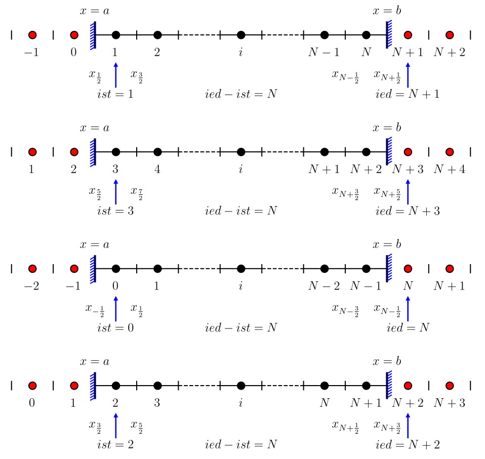
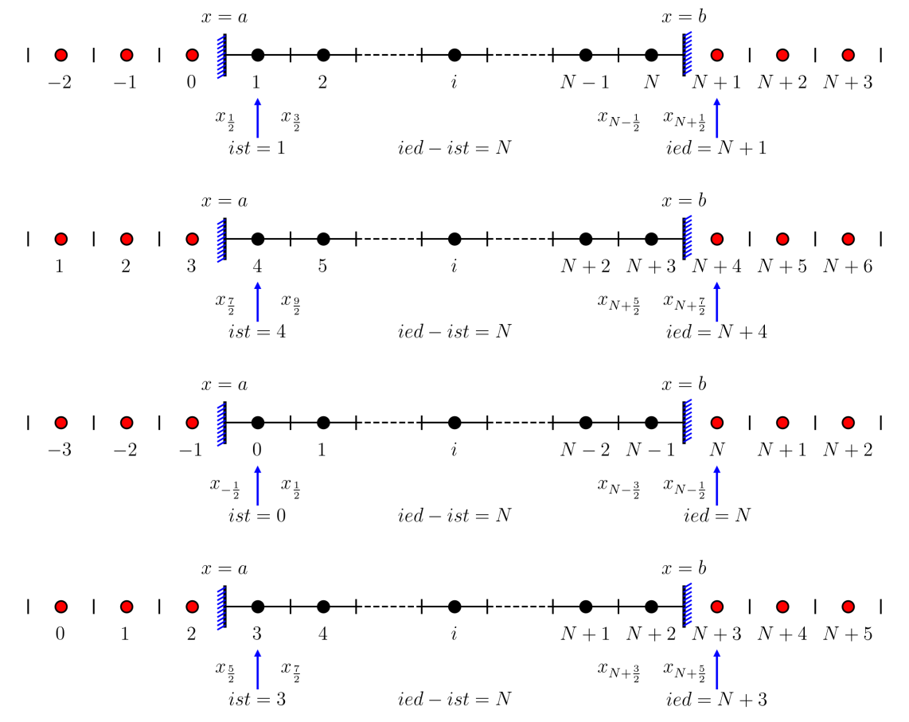
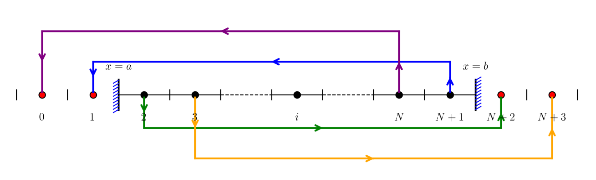
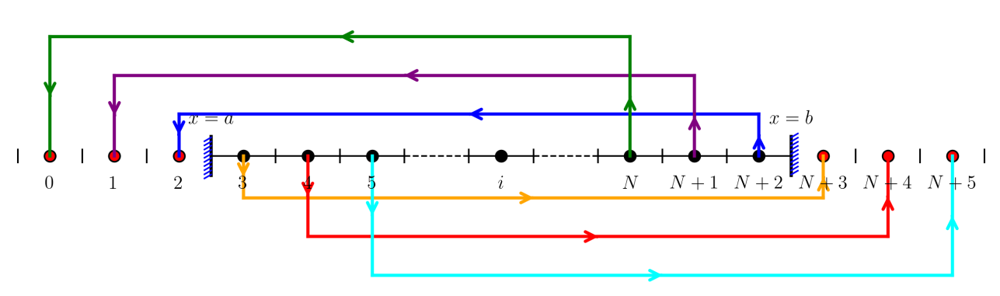
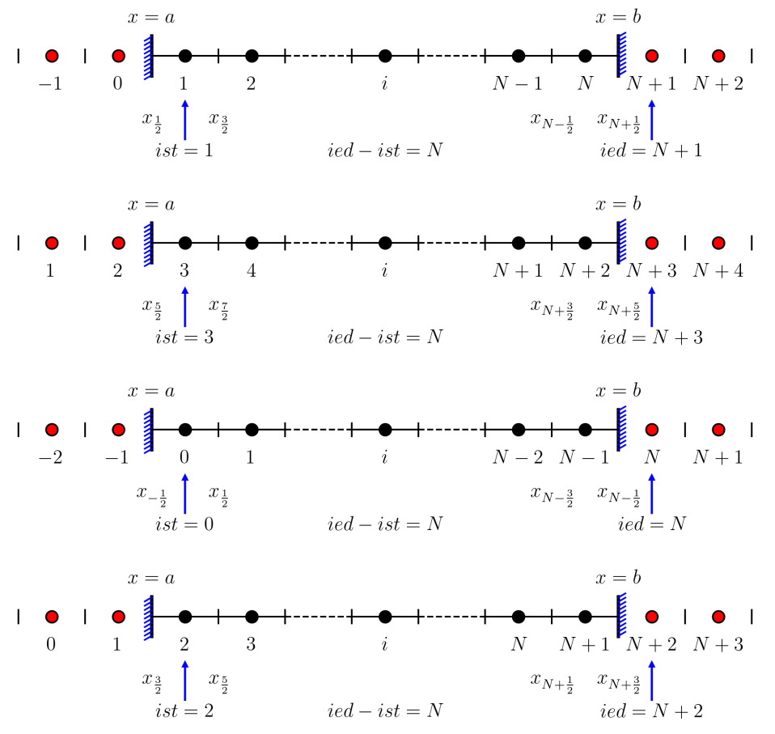
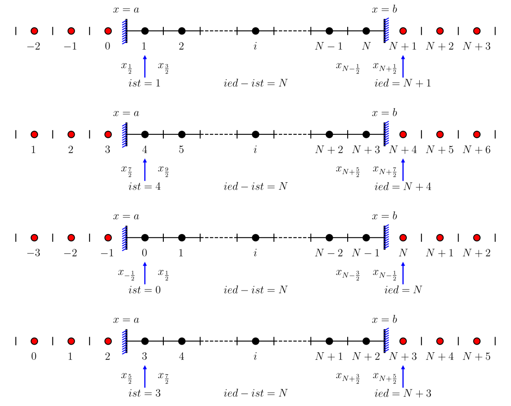
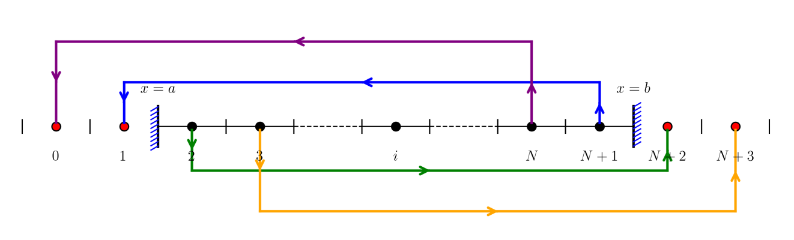
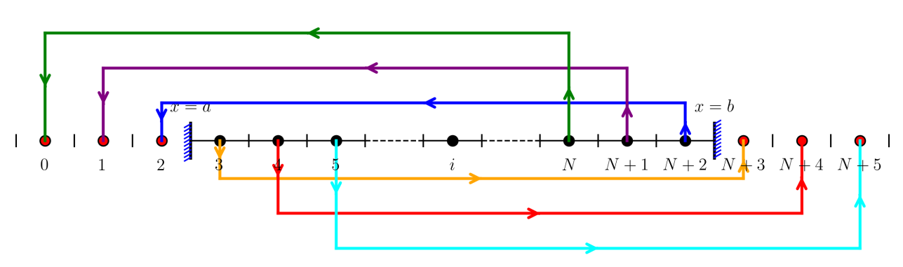

1
2
3
4
5
6
7
8
9
10
11
12
13
14
15
16
17
18
19
20
21
22
23
24
25
26
27
28
29
30
31
32
33
34
35
36
37
38
39
40
41
42
43
44
45
46
47
48
49
50
51
52
53
54
55
56
57
58
59
60
61
62
63
64
65
66
67
68
69
70
71
72
73
74
75
76
77
78
79
80
81
82
83
84
85
86
87
88
89
90
91
92
93
94
95
96
97
98
99
100
101
102
103
104
105
106
107
108
109
110
111
112
113
114
115
116
117
118
119
120
121
122
123
124
125
126
127
128
129
130
131
132
133
134
135
136
137
138
139
140
141
142
143
144
145
146
147
148
149
150
151
152
153
154
155
156
157
158
159
160
161
162
163
164
165
166
167
168
169
170
171
172
173
174
175
176
177
178
179
180
181
182
183
184
185
186
187
188
189
190
191
192
193
194
195
196
197
198
199
200
201
202
203
204
205
206
207
208
209
210
211
212
213
214
215
216
217
218
219
220
221
222
223
224
225
226
227
228
229
230
231
232
233
234
235
236
237
238
239
240
241
242
243
244
245
246
247
248
249
250
251
252
253
254
255
256
257
258
259
260
261 | import matplotlib.pyplot as plt
import numpy as np
def plot_vertical_boundary(border_x, y_start, y_end, lr):
"""
Plot a vertical boundary with diagonal lines on one side.
Parameters:
-----------
border_x : float
The x-coordinate of the vertical boundary line
y_start : float
The starting y-coordinate of the vertical boundary
y_end : float
The ending y-coordinate of the vertical boundary
lr : str
Direction indicator: 'L' for left side, 'R' for right side
Determines the orientation of diagonal lines
"""
# Batch plot diagonal lines
num_lines = 10 # Number of diagonal lines
# Calculate the total height
dy = y_end - y_start
# Generate evenly spaced y positions for diagonal lines
# Add small margins to avoid lines at the very edges
y_positions = np.linspace(y_start + 0.02 * dy, y_end - 0.02 * dy, num_lines)
# Length of each diagonal line (as percentage of total height)
line_length = 0.2 * dy
# Determine angle based on direction
if lr == "L":
angle = 180 + 30 # 210 degrees for left side
else:
angle = 30 # 30 degrees for right side
# Convert angle to radians for trigonometric calculations
angle_rad = np.deg2rad(angle)
# Calculate dx and dy components for the diagonal lines
dx = line_length * np.cos(angle_rad)
dy_component = line_length * np.sin(angle_rad)
# Plot the main vertical boundary line
plt.plot([border_x, border_x], [y_start, y_end], 'k-', linewidth=2)
# Plot each diagonal line
for y in y_positions:
# Start point: on the vertical line
x1 = border_x
y1 = y
# End point: offset by dx and dy
x2 = x1 + dx
y2 = y1 + dy_component
# Plot the diagonal line
plt.plot([x1, x2], [y1, y2], color='blue', linewidth=1)
class BaseMesh:
"""Base class for mesh (main mesh/ghost mesh) with common grid logic"""
def __init__(self, ncells, xstart, dx, lr=None):
self.ncells = ncells
self.nnodes = self.ncells + 1
self.xstart = xstart # Starting coordinate of the mesh
self.dx = dx # Grid spacing (negative value for left ghost mesh)
self.lr = lr # Identifier for ghost mesh: "L" (left) / "R" (right), None for main mesh
# Initialize empty arrays for node coordinates and cell-center coordinates
self.x = np.zeros(self.nnodes, dtype=np.float64)
self.y = np.zeros(self.nnodes, dtype=np.float64)
self.xcc = np.zeros(self.ncells, dtype=np.float64)
self.ycc = np.zeros(self.ncells, dtype=np.float64)
def generate_mesh(self):
"""Calculate node coordinates and cell-center coordinates for the mesh"""
# Compute node coordinates along x-axis (y=0 for 1D mesh)
for i in range(self.nnodes):
self.x[i] = self.xstart + i * self.dx
self.y[i] = 0.0
# Compute cell-center coordinates as midpoint of adjacent nodes
for i in range(self.ncells):
self.xcc[i] = 0.5 * (self.x[i] + self.x[i+1])
self.ycc[i] = 0.0
def printinfo(self, prefix="Mesh"):
"""Print detailed mesh parameters and coordinates"""
print(f"{prefix} ncells = {self.ncells}")
print(f"{prefix} nnodes = {self.nnodes}")
print(f"{prefix} xstart = {self.xstart:.6f}")
if self.lr is not None:
print(f"{prefix} lr = {self.lr}")
print(f"{prefix} dx = {self.dx:.6f}")
print(f"{prefix} x coordinates = {self.x}")
print(f"{prefix} cell-center x coordinates = {self.xcc}")
def plot_boundary_vertical_interface_lines(self):
"""Plot vertical lines at all mesh node positions (cell boundaries)"""
dy = 0.1 * abs(self.dx) # Absolute value ensures positive vertical line length
ipoints = [0,self.nnodes-1]
for i in ipoints:
xm = self.x[i]
ym = self.y[i]
#plt.plot([xm, xm], [ym - 3*dy, ym + 3*dy], 'k-', linewidth=1)
lr = "L" if i == 0 else "R"
plot_vertical_boundary(xm,ym - 3*dy,ym + 3*dy, lr)
def plot_vertical_interface_lines(self, indices=None):
"""Plot vertical lines at all mesh node positions (cell boundaries)"""
dy = 0.1 * abs(self.dx) # Absolute value ensures positive vertical line length
if indices is None:
indices = [i for i in range(0, self.nnodes)]
for i in indices:
xm = self.x[i]
ym = self.y[i]
plt.plot([xm, xm], [ym - dy, ym + dy], 'k-', linewidth=1)
class Ghost(BaseMesh):
"""Ghost mesh class with cell labeling and visualization"""
def __init__(self, xstart, dx, ncells, lr):
# Inherit initialization logic from BaseMesh class
super().__init__(ncells=ncells, xstart=xstart, dx=dx, lr=lr)
def plot_cell_label(self):
ytext_shift = 0.5*abs(self.dx) # Y-position for labels (avoid overlap with main mesh)
for i in range(self.ncells):
# Define cell labels based on left/right ghost mesh type
if self.lr == "L":
cell_label = f"${- i}$" # Label format for left ghost cells
else:
cell_label = f"$N+{i+1}$" # Label format for right ghost cells
# Add text label at cell center
plt.text(self.xcc[i], self.ycc[i]-ytext_shift, cell_label, fontsize=12, ha='center')
def plot(self):
"""Visualize ghost mesh: cell-center points and cell index labels"""
self.plot_cell_label()
# Plot cell-center points (red fill with black edge)
plt.scatter(self.xcc, self.ycc, s=50, facecolor='red', edgecolor='black', linewidth=1)
indices = [i for i in range(1, self.nnodes)]
self.plot_vertical_interface_lines(indices)
class Mesh(BaseMesh):
"""Main mesh class with ghost mesh generation and management"""
def __init__(self):
# Define main mesh physical boundaries and grid resolution
self.xmin = 0.0 # Left physical boundary of main mesh
self.xmax = 1.0 # Right physical boundary of main mesh
self.ncells = 9 # Number of cells in main mesh
self.dx = (self.xmax - self.xmin) / self.ncells # Grid spacing of main mesh
self.nnodes = self.ncells + 1 # Number of nodes in main mesh
# Initialize main mesh using BaseMesh constructor
super().__init__(ncells=self.ncells, xstart=self.xmin, dx=self.dx, lr=None)
self.nghosts = 2 # Number of ghost cell layers on each side
# Create left ghost mesh (mirror extension to the left of main mesh)
self.ghost_mesh_left = Ghost(
xstart=self.xmin,
dx=-self.dx,
ncells=self.nghosts,
lr="L"
)
# Create right ghost mesh (mirror extension to the right of main mesh)
self.ghost_mesh_right = Ghost(
xstart=self.xmax,
dx=self.dx,
ncells=self.nghosts,
lr="R"
)
def generate_total_mesh(self):
self.generate_mesh()
self.ghost_mesh_left.generate_mesh()
self.ghost_mesh_right.generate_mesh()
def printinfo(self):
"""Print main mesh and ghost mesh information"""
super().printinfo(prefix="Main Mesh")
self.ghost_mesh_left.printinfo(prefix="Left Ghost Mesh")
self.ghost_mesh_right.printinfo(prefix="Right Ghost Mesh")
def plot_cell_label(self):
ytext_shift = 0.5*abs(self.dx) # Y-position for labels (avoid overlap with main mesh
nlabels = 2
for i in range(self.ncells):
if i < nlabels:
cell_label = f"${i+1}$"
elif i > self.ncells - 1 - nlabels:
inew = i - (self.ncells - 1)
if inew == 0:
cell_label = f"$N$"
else:
cell_label = f"$N{inew}$"
else:
cell_label=""
# Add text label at cell center
plt.text(self.xcc[i], self.ycc[i]-ytext_shift, cell_label, fontsize=12, ha='center')
def plot(self):
"""Complete visualization of main mesh and ghost meshes"""
# Plot main mesh cell-center points (black fill with black edge)
plt.scatter(self.xcc, self.ycc, s=50, facecolor='black', edgecolor='black', linewidth=1)
# Plot horizontal line connecting main mesh nodes
plt.plot(self.x, self.y, 'k-', linewidth=1)
# Plot vertical interface lines for main mesh
indices = [i for i in range(1, self.nnodes-1)]
self.plot_vertical_interface_lines(indices)
self.plot_boundary_vertical_interface_lines()
self.plot_cell_label()
# Add boundary labels for main mesh
dy = 0.1 * self.dx
plt.text(self.x[0], self.y[0]+3.5*dy, r'$x=a$', fontsize=12, ha='center')
plt.text(self.x[-1], self.y[0]+3.5*dy, r'$x=b$', fontsize=12, ha='center')
# Plot ghost mesh components (points and labels)
self.ghost_mesh_left.plot()
self.ghost_mesh_right.plot()
def plot_cfd_figure():
"""Generate and save CFD mesh visualization figure"""
# Configure LaTeX for text rendering and font settings
plt.rc('text', usetex=True)
plt.rc('font', family='serif', serif=['Times New Roman'])
# Create figure with fixed dimensions
plt.figure(figsize=(12, 4))
# Initialize main mesh and generate grid coordinates
mesh = Mesh()
mesh.generate_total_mesh()
# Print mesh information for verification
mesh.printinfo()
# Render all mesh components
mesh.plot()
# Set axis limits for symmetric display
plt.xlim(-1.5, 1.5)
plt.ylim(-1, 1)
# Set equal axis scale and hide axis lines
plt.axis('equal')
plt.axis('off')
# Save figure with high resolution and tight bounding box
plt.savefig('cfd.png', bbox_inches='tight', dpi=300)
# Display the figure
plt.show()
if __name__ == '__main__':
plot_cfd_figure()
|
 






